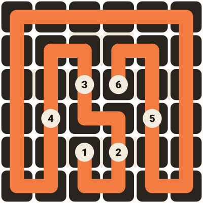
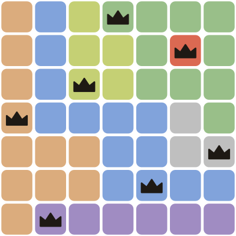
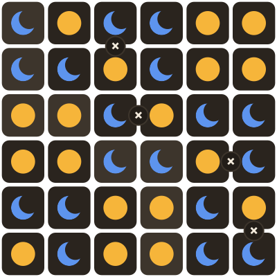
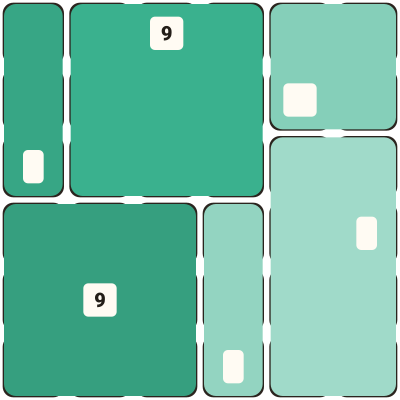
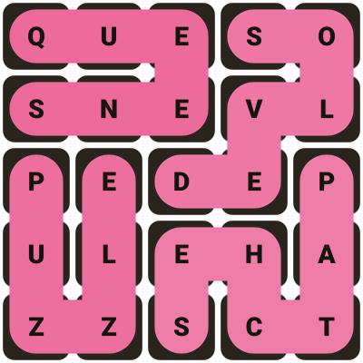
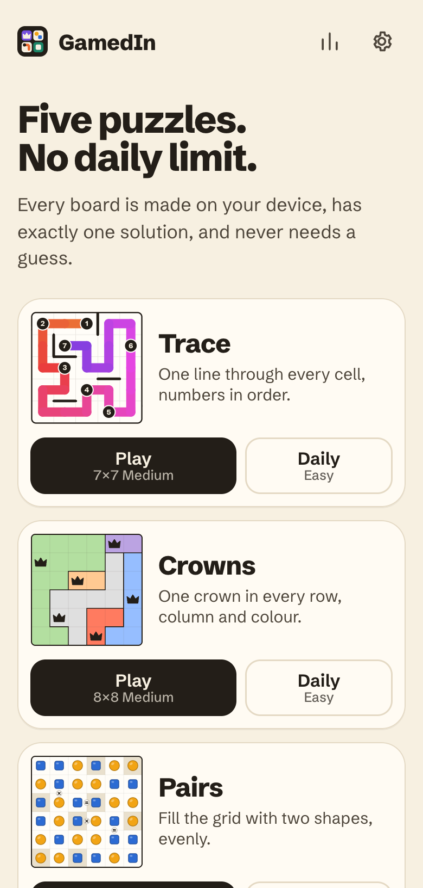
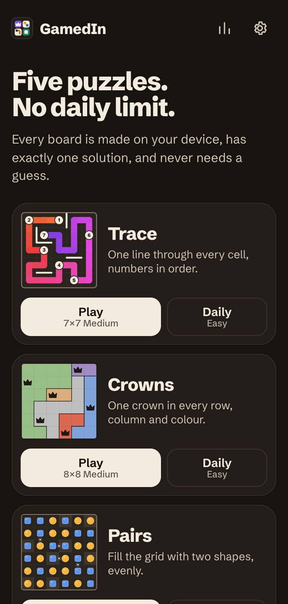

Free browser extension
LinkedIn's daily puzzles, solved in milliseconds.
LarpedIn reads the board from the page, finds the answer with an exact solver and plays it for you. Zip, Queens, Tango, Patches and Wend.
- No AI, no guessing
- Nothing leaves your browser
- Open source


Read, solve, play
Three steps on every board. This tiny puzzle is solved by a real search running in your browser, slowed down so you can follow it.
On your machine, this demo puzzle solves in … on average over 200 runs.
Five puzzles, five solvers
Each game has a solver written for its own rules. These are real boards, solved by the extension.
-
Zip
Draw one path through every cell, passing the numbers in order.
Path search that spots forced moves and cut-off cells.
-


Queens
One queen in every row, column and colour region, and no two touching.
Bit-mask search that counts what each region has left.
-


Tango
Fill the grid with suns and moons: balanced lines, no three in a row, every = and × respected.
Rule propagation that tests each cell both ways.
-


Patches
Cut the grid into rectangles, each matching the shape and size of its one clue.
Exact cover search over every rectangle that fits.
-


Wend
Find the hidden words that snake through the grid and use every tile once.
A 243,000-word dictionary plus exact cover.
Install
On phones, extensions run in Firefox for Android and in Safari on iPhone.
Pick your browser.
Want more than one a day?
GamedIn has five puzzles in the same spirit: Trace, Crowns, Pairs, Plots and Wind. No daily limit, and every board has exactly one solution.
Play GamedIn

Questions
Is this made by LinkedIn?
No. LarpedIn is an independent fan project. It is not affiliated with, endorsed by, or sponsored by LinkedIn or Microsoft. "LinkedIn", "Zip", "Queens", "Tango", "Patches" and "Wend" belong to their owners and are used here only to say what the extension works with.
Can using it get my account in trouble?
Possibly. LinkedIn's User Agreement restricts automated tools on its site, and using one could put your account at risk. Use it at your own risk, ideally just for fun or to learn how puzzle solvers work. The extension doesn't hide what it does: it's your choice when and whether to press Solve.
What does it read, and does it send my data anywhere?
It sends nothing anywhere. Here is exactly what it does:
- It only runs on
www.linkedin.com, and does nothing unless the address is one of the game pages. - On a game page it reads the puzzle grid and nothing else: no profile, feed, messages or contacts.
- It contains no network code at all: no
fetch,XMLHttpRequest, WebSocket or beacon calls, no analytics, no remote scripts. - The extension's only browser permission is
storage, to sync your settings. The userscript asks for no permissions at all. - Your settings are kept in the browser's extension storage, and the puzzle archive in the page's own local storage, both on your computer. Export saves a file to your computer; it doesn't upload it.
Don't take our word for it: the source is public, and it's small enough to read in one sitting.
Does it use AI?
No. Each game has a hand-written exact solver: a search that tries possibilities and uses the puzzle's rules to rule most of them out early (constraint propagation). If there's an answer it finds it, and the answer is always correct. That's why it takes well under a millisecond on most puzzles instead of seconds.
Do I need Tampermonkey?
No, but it is the quickest way in. It installs LarpedIn as a userscript in two clicks. If you would rather not, the full extension can be loaded by hand from the install section. Store listings show up in the picker as soon as they exist.
Does it work in Firefox, Safari or on my phone?
Yes. Chrome, Edge, Brave and Opera on computers, Firefox on computers and Android, Safari on Mac, iPhone and iPad. Chrome on phones can't run extensions, so use Firefox on Android and Safari on iPhone. Desktop Chrome is the most tested.
It stopped working. What now?
LinkedIn can change its game pages at any time, which can break reading or playing. Check GitHub for a newer version, or open an issue there with the message shown in the panel.
Is it free?
Yes. It's free and open source, with no accounts, ads or tracking.
Why "LarpedIn"?
Because posting a 3-second Queens time is LARPing (live-action role-playing) as someone who's very good at Queens. Be nice about it.